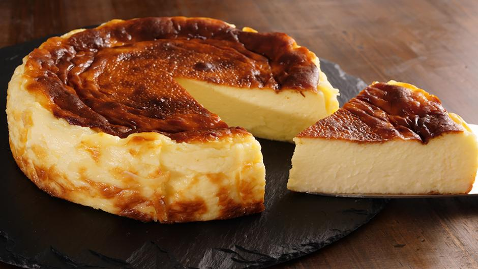
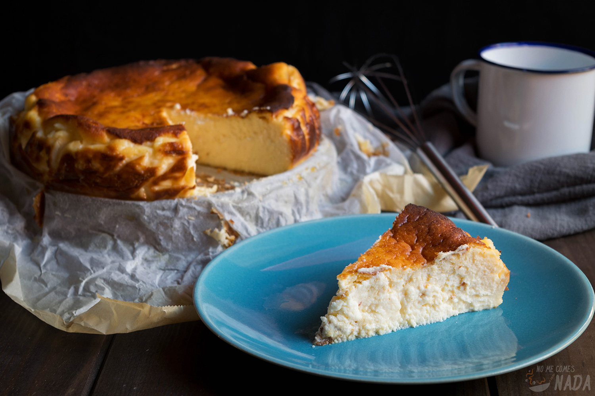
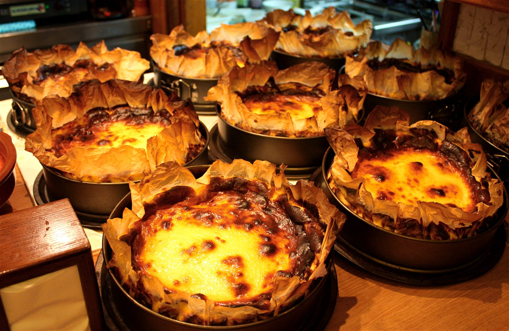
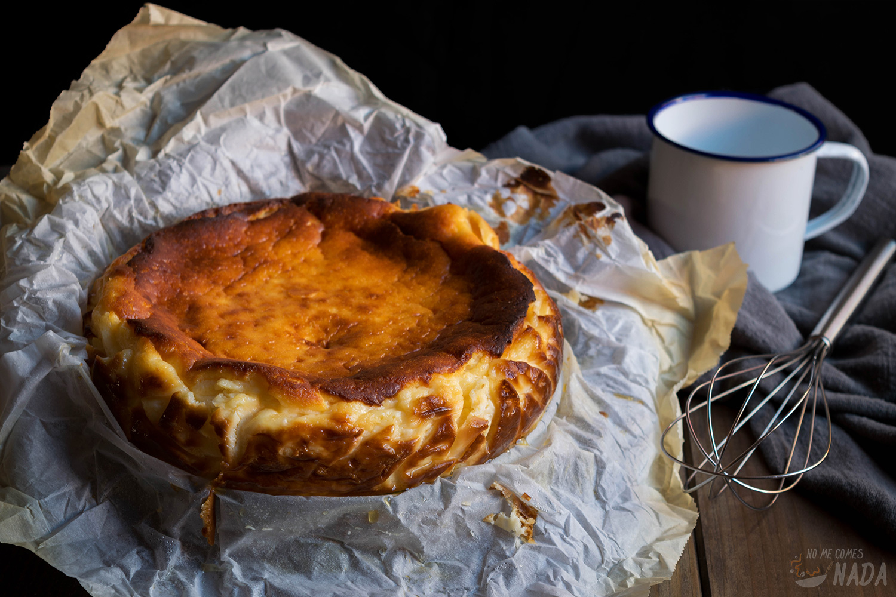

Hoy vamos hacer una tarta de queso casera, del estilo "la viña". Una tarta de queso casera, hecha al horno, con un sabor fuerte y un interior cremoso. Además añadiremos una mermelada casera de frutos del bosque para aderezar a la hora de servir.
Este reconocido postre nace en un bar restaurante ubicado en la parte vieja de Donosti llamado La Viña. Allí lleva medio siglo ofreciendo su cocina casera tradicional, basada en materias primas de primera calidad. Se trata de una tarta de queso suave, sin corteza, horneada en un horno muy caliente con el objetivo de que la parte superior se caramelice al tiempo que el interior se mantiene suave y cremoso. Además, cuenta con el punto justo de azúcar para que sea capaz de saborearse el queso. Además, eliminamos la galleta que tanto se usaba en las tartas, porque al comerla se impide que el sabor se quede cremoso en el paladar, se entorpecía.
 
 
Esta es una receta de tarta de queso, la cual se cocina al horno. Es otra variante de la tipica tarta de queso fresco sin hornear. En este caso obtendremos un resultado mas cremoso, a diferencia de la tarta sin hornear que tiene una textura mas "gelationsa". Al utilizar variedades de quesos y añadirle huvevos, conseguimos además de la textura cremosa un sabor mas fuerte y intenso. Es apta para cualquier amante de la cocina, sea del nivel que sea. Ya que no necesita de muchas habilidades culinarias para preparla y tampoco muchos utensilios. Todo el proceso puede durar 10 minutos mas el tiempo de horneado que dependerá del horno que utilicemos, pero puede oscilar entre 30-40 minutos.
| Ingrediente | Cantidad | Explicación |
|---|---|---|
| Queso mascarpone | 200 gramos | Este queso es necesario para darle la cremosidad, no podemos sustituirlo por ningun otro |
| Queso de untar | 500 gramos | No importa si es marca blanco o Philadelphia, este ingrediente tambien es importante |
| Azucar | 300 gramos | Podemos echarle menos, depende de la intensidad del sabor que querramos obtener |
| Huevos | 7 unidades | Tamaño L/XL |
| Mantequilla | 1 cucharada | |
| Leche | 25 mililitros | |
| Ingrediente | Cantidad | Explicacion |
|---|---|---|
| Frutos rojos congelados | 300 gramos | No hara falta descongelarlos para preparar la cobertura. Ademas sobrará para poder guardarla como mermelada |
| Azucar | 200 gramos | Es una cifra orientativa. Depende de cada gusto, podemos ponerle muchisimo menos, depende de lo golosos que seais |
| Agua | Medio vaso | Es una medida orientativa, puede ser un medio vaso o vaso entero. Cuando concinemos la cobertura, para que no se pegue al fondo del recipiente iremos añadiendo agua |